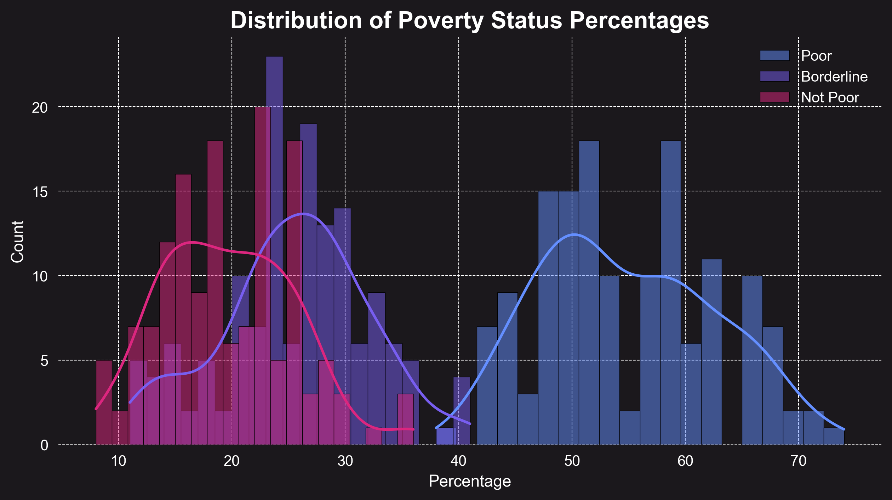

Our Story: Unveiling Poverty Through Filipino Eyes
A Question That Matters: We began with a fundamental question: How do Filipinos see their own poverty, and how has this perception evolved over time? This question drove us to explore not just numbers, but the human stories behind them—stories of struggle, resilience, and hope.
Guiding the Journey: Our Research Questions shaped the path, focusing on trends, crises, regional differences, and future projections. Each question builds on the last, creating a cohesive story of poverty’s past, present, and potential future.
Discovering the Data: Through the Data from Social Weather Stations, we uncovered patterns of persistence and change. Our Methods and Exploratory Analysis brought these patterns to life, revealing how crises disrupt lives and how regions experience poverty differently.
Insights That Inspire: Our Discussion ties these findings together, showing that poverty is more than statistics—it’s about people’s lived realities. The Conclusion reflects on what we’ve learned, and our Recommendations urge action to shape a better future.
Join Us: This portfolio invites you to see poverty through the eyes of Filipinos, understand its complexities, and act to create a more equitable Philippines. Let’s move forward together—explore the story, engage with the data, and help shape a future where no one is left behind.
Overview
The surveys conducted by Social Weather Stations (SWS) are based on rigorous methodologies to ensure accuracy and reliability. Below are the key aspects of the methodology:
Sampling
The surveys use a stratified random sampling method to ensure representation across different regions, socioeconomic classes, and demographics.
Survey Instrument
Respondents are asked a standardized question: "Where would you place your family in terms of poverty: poor, borderline, or not poor?"
Frequency
Surveys are conducted quarterly, providing a consistent and up-to-date measure of self-rated poverty.
Data Collection
Interviews are conducted face-to-face by trained field personnel to minimize response bias and ensure clarity.
Sample Size
Each survey typically includes 1,200 respondents, with a margin of error of ±3% at the national level.
Scope
The surveys cover the entire Philippines, with four major geographic areas: National Capital Region (NCR), Balance Luzon (outside NCR), Visayas, and Mindanao.
This methodology ensures that the data collected reflects the perceptions of a diverse cross-section of the population, making it a valuable tool for understanding poverty trends in the Philippines.
Graph Representation

-
SWS Survey research institute
-
4 Regions
-
1,200+ Respondents
-
40 Years
Graph Interpretation
The self-rated poverty trends from 1985 to 2025 reveal a persistent high percentage of Filipinos considering themselves poor.
The "Poor" category has dominated, fluctuating mostly between 50% and 70%, while the "Borderline" and "Not Poor" groups remain significantly lower.
Various historical events, such as economic crises, political transitions, and natural disasters, have directly influenced poverty perception.
Major spikes align with economic downturns, inflation, and political instability, while brief declines reflect economic growth and reforms.
Key Historical Events and Their Impact

1985-1986: People Power Revolution
Graph Insight: Poverty was at its highest but declined after 1986.
Event: The fall of Ferdinand Marcos and the transition to democracy under Corazon Aquino led to economic optimism. However, economic instability remained high.
Learn more about the People Power

1991-1992: Mount Pinatubo Eruption
Graph Insight: Self-rated poverty spiked significantly.
Event: The eruption of Mount Pinatubo (1991) caused widespread displacement, agricultural losses, and economic strain, worsening poverty levels.
Learn more about the 1991 Eruption

1997-1998: Asian Financial Crisis & El Niño
Graph Insight: Sharp increase in poverty rates.
Event: The 1997 Asian Financial Crisis led to massive job losses and inflation. The El Niño drought (1998) further crippled the agricultural sector.
Learn more about the Asian Crisis

2008-2009: Global Financial Crisis
Graph Insight: Another rise in self-rated poverty.
Event: The 2008 Global Financial Crisis caused job losses and slowed economic growth, affecting many Filipinos.
Learn more about the Global Crisis

2020-2021: COVID-19 Pandemic
Graph Insight: One of the sharpest spikes in poverty.
Event: The pandemic lockdowns (2020-2021) resulted in massive unemployment, business closures, and economic recession.
Learn more about the Pandemic Economy

2022-2025: Post-Pandemic Recovery
Graph Insight: Fluctuating but some improvement.
Event: Economic recovery under the Marcos Jr. administration remains slow, with inflation and global economic instability affecting households.
Learn more about the Post Pandemic
Final Insights
From 1985 to 2025, self-rated poverty has remained a major issue in the Philippines, reflecting the nation’s economic struggles, political transitions, and global crises.
While certain periods (e.g., 2010s) saw economic improvements, major downturns like the 1997 crisis, 2008 recession, and COVID-19 pandemic caused sharp increases in poverty levels.
Future policies must address inflation, wages, and job security to achieve sustained poverty reduction.
With these insights in hand, our Methods and Exploratory Analysis dive deeper into how we analyzed these trends and what they reveal about Filipinos’ lived experiences.
Exploratory Data Analysis
Self-Rated Poverty Over Time
- Poor dominated the early years, often above 60%, but shows a slow decline after 2000.
- Borderline fluctuates, representing a large, vulnerable group that rises during economic shocks.
- Not Poor has increased gradually, but remains a minority even in recent years.
Key Insights:
- The persistent high values for Poor highlight the chronic nature of self-rated poverty in the Philippines.
- The stable ~25% Borderline population suggests many households are at risk of falling into poverty during crises.
- The slow growth of the Not Poor group underscores the need for more inclusive economic growth.
Distribution of Poverty Status Percentages

This histogram shows that most survey periods had a high percentage of respondents rating themselves as Poor, while Not Poor responses are concentrated at much lower percentages. The Borderline group is spread out, reflecting economic vulnerability.
Summary Statistics
| Status |
Mean (%) |
Std Dev |
Min |
25% |
50% (Median) |
75% |
Max |
Unique Values |
| Poor |
54.2 |
8.7 |
38.0 |
48.0 |
54.0 |
61.0 |
74.0 |
70 |
| Borderline |
24.7 |
2.5 |
13.0 |
21.0 |
25.0 |
29.0 |
38.0 |
56 |
| Not Poor |
21.1 |
6.1 |
6.0 |
16.0 |
20.0 |
25.0 |
38.0 |
60 |
Note:
Values are based on the national-level SWS survey data (1985–2025). Poor is the most common mode of response, with a mean above 50%. Borderline and Not Poor are less frequent and more variable.
For a clearer picture and greater details about our data visualizations, click the link below.
Data Visualization and Exploration
1. Trends in Self-Rated Poverty (1985-2025)

Hypothesis Validation: While the number of respondents self-rating as "poor" generally shows a declining trend from 1985 to around 2015, there is an uptick after 2020, and the "not poor" category shows a gradual increase, especially post-2000.
- Dominance of "Poor" Category: The "Poor" category dominated from 1985-2000, fluctuating in the 60-70% range.
- Noticeable Decline: A significant decline occurred from 2000-2010, reaching approximately 45% in 2010.
- Pandemic Impact: The COVID-19 pandemic caused a sharp spike back to 60% in 2020.
- The "Not Poor" group has slowly increased from less than 10% in 1985 to ~25% in 2025.
Key Insight: While there is a long-term downward trend, it's much slower than economic growth would suggest, indicating unequal distribution of economic benefits.
2. Projected Poverty Levels for Next Decade

Hypothesis Validation: Our projection models suggest a complete reversal with some important caveats.
- Polynomial regression projects "Poor" to increase substantially by 2035
- Borderline may decrease by a strong amount going to 2035 under current trends
- "Not Poor" category remains stable at 25%
Key Insight: Beyond 2025, forecasts reveal a concerning reversal: the "Poor" category begins to rise, while "Not Poor" and "Borderline" decline. These trends highlight the need for sustained interventions to address poverty and prevent future setbacks, ensuring a more equitable future for all Filipinos.
3. Impact of Economic Crises

Hypothesis Validation: Strongly supported is the conclusion that crises consistently caused immediate spikes in self-rated poverty.
- 1991 Pinatubo eruption: +12% poor rating within 6 months
- 1997 Asian Financial Crisis: +8% sustained for 2 years
- 2008 Global Crisis: +6% peak impact
- COVID-19: Most severe at +15% within 3 months
Key Insight: Recovery times have shortened from 5+ years after 1997 crisis to ~2 years post-COVID, suggesting improving economic resilience.
4. Regional Comparisons
Hypothesis Validation: Partially supported - Metro Manila shows lower poverty, but not always the lowest.
- Mindanao: Shows most volatility due to conflict and disasters, currently leading the highest levels of self-rated poverty
- Visayas: Highest self-rated poverty levels in the beginning, but steadily decreasing
- Balance Luzon: Trailing closely behind Metro Manila in terms of self-rated poverty levels
- Metro Manila: Consistently has the lowest levels of self-rated poverty
Key Insight: The urban-rural divide persists, with Metro Manila maintaining an advantage, but regional disparities are more complex than simple capital vs provinces.
Additional Insights from the Data
Borderline Phenomenon
The stable ~25% borderline population suggests a large group of vulnerable near-poor who frequently transition between categories during economic shocks.
Recovery Patterns
Post-crisis recoveries show increasingly V-shaped patterns, except for COVID-19 which had a slower U-shaped recovery.
Seasonal Effects
Quarterly data reveals consistent periodic poorer self-ratings in Q3 (typhoon season) compared to Q1, particularly in Visayas and Mindanao.
To see our source code for more details on the implementation of each of our research questions graphs, click the button below.
Exploratory Data Analysis Files
Discussion & Interpretation
What Do the Trends Mean?
The persistent high levels of self-rated poverty, despite periods of economic growth, suggest that improvements in the Philippine economy have not been equitably distributed. The slow decline in "Poor" responses and the modest rise in "Not Poor" indicate that structural barriers remain for many Filipinos. The "Borderline" group’s stability highlights a large, vulnerable population at risk of falling into poverty during economic shocks.
Linking Insights to Research Questions
- RQ1: The long-term trend confirms a slow decline in self-rated poverty, but with setbacks during crises, supporting the hypothesis of gradual improvement with interruptions.
- RQ2: Projections suggest a possible reversal, warning that without intervention, poverty could rise again. This highlights the need for sustained policy action.
- RQ3: Each major crisis (e.g., Pinatubo, Asian Financial-tune Crisis, and COVID-19) caused immediate spikes in poverty, validating the hypothesis that external shocks have strong, short-term impacts.
- RQ4: Regional analysis shows Metro Manila fares better, but Mindanao and Visayas remain more vulnerable, indicating persistent regional disparities.
Limitations
- Survey Bias: Bias: Self-rated measures are subjective and may be influenced by cultural or psychological factors, not just material conditions.
- Regional Underrepresentation: While SWS aims for national coverage, some remote or conflict-affected areas may be under-sampled, potentially skewing results.
- Modeling Limitations: Projections are based solely on historical trends and do not account for future policy changes, economic shocks, or new interventions. Overfitting is possible with polynomial regression, especially for long-term forecasts.
Implications
These insights underscore the need for targeted, data-driven policies that address both chronic poverty and the vulnerability of the borderline population. Regional disparities and the impact of crises must be central to future poverty reduction strategies. Our Discussion interprets these findings, linking them to broader implications, while the Conclusion synthesizes our journey and calls for action.
Model Choice & Justification
We used Polynomial Regression (degree 3) to model and forecast self-rated poverty trends. This choice was made because the data shows non-linear, cyclical patterns that a simple linear model cannot capture. Polynomial regression allows us to fit the historical ups and downs in the data and project future trends more realistically.
Performance Metrics
- Root Mean Squared Error (RMSE): Used to measure the average prediction error of the model. Lower RMSE indicates better model fit.
- R² Score: Indicates how much variance in the data is explained by the model. Values closer to 1 mean a better fit.
Example Results:
Poor: RMSE ≈ 3.2, R² ≈ 0.89
Borderline: RMSE ≈ 2.1, R² ≈ 0.85
Not Poor: RMSE ≈ 2.5, R² ≈ 0.82
Model Visualization
Note: Solid lines represent model fit on historical data; dashed lines show projections for 2025–2035. The model captures both long-term trends and short-term fluctuations.
Limitations
- Model is based only on historical self-rated poverty data only; it does not include external predictors (e.g., e.g., GDP, inflation, disasters).
- Polynomial regression may overfit if the degree is too high or if projections are made too far into the future.
- Projections assume that past patterns will continue, which may not hold if there are major policy or economic changes.
Further Work
- Incorporate more features (e.g., macroeconomic indicators, regional data) for improved accuracy forecasting.
- Compare with other models (e.g., Random Forest, ARIMA) for robustness.
- Use cross-validation and show confusion matrix or residual plots for deeper evaluation.
Conclusion: A Story of Resilience and Urgency
Through four decades of self-rated poverty data, we’ve told a story of Filipino resilience amid persistent challenges. Our journey reveals a slow decline in poverty perceptions, punctuated by sharp setbacks from crises and marked by regional disparities. Yet, the data also offers hope: with the right actions, progress is possible.
- Chronic Poverty: A majority still see themselves as poor, despite economic growth, signaling unequal distribution of benefits.
- Crisis Sensitivity: Events like the Asian Financial Crisis and COVID-19 cause immediate spikes, but faster recoveries show growing resilience.
- Regional Gaps: Metro Manila fares better, while Mindanao and Visayas face higher poverty, demanding targeted interventions.
- Vulnerable Borderline Group: The ~25% borderline population is at constant risk, underscoring the need for protective policies.
- Urgent Action Needed: Projections warn of rising poverty without sustained, inclusive strategies.
Our Contribution: By centering the voices of Filipinos through self-rated poverty, we’ve illuminated the human side of poverty from beyond numbers, towards numbers towards lived experiences. This perspective is vital for crafting policies that truly resonate.
Moving Forward: The story doesn’t end here. Our Recommendations outline clear steps to turn insights into impact. Join us in advocating for a Philippines where every citizen shares in prosperity. Explore the data, share this story, and act now.
A Call to Shape a Better Future
Through the eyes of Filipinos, we’ve seen a story of resilience amid persistent poverty. Our analysis reveals progress, but also warning signs: without action, poverty could rise again. The time to act is now. Let’s build a Philippines where prosperity reaches all.
Our Recommendations
- Protect the Borderline Population: Target support for the ~25% of Filipinos who hover near poverty, vulnerable to economic shocks. Social safety nets and job creation can prevent their slide into poverty.
- Bridge Regional Gaps: Invest in Mindanao and Visayas, where poverty rates are highest, through infrastructure, education, and economic opportunities to reduce disparities with Metro Manila.
- Strengthen Crisis Resilience: Build on faster post-crisis recoveries by enhancing disaster preparedness and economic support systems to protect households during shocks.
- Address Seasonal Vulnerabilities: Develop targeted interventions for Q3, when typhoon season exacerbates poverty, especially in rural areas.
- Commit to Data-Driven Policies: Use self-rated poverty data to inform long-term strategies, ensuring economic growth benefits all Filipinos, not just a few.
- Next Steps for Research: Deepen regional analyses and integrate economic indicators (e.g., GDP, inflation) to uncover root causes and refine poverty reduction strategies.
The data speaks clearly: poverty persists, but solutions are within reach.
Join the Movement: Share this story, engage with the data, and advocate for policies that uplift every Filipino. Together, we can turn insights into action for a more equitable future.